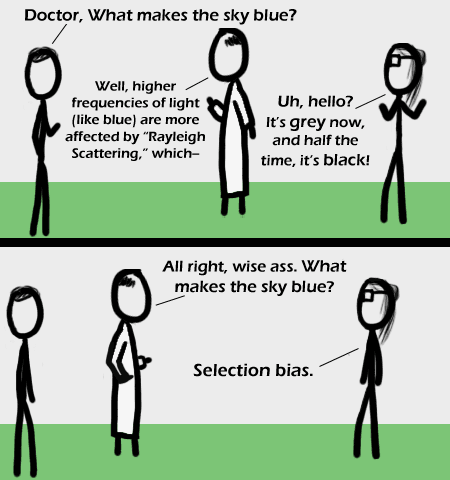

Comic JK 364
When I Feel Like It
⇤
<
?
>
⇥

⇤
<
?
>
⇥
Forum
.
RSS
.
Digg
.
Facebook
.
Reddit
.
Twitter
.
Stumbleupon
I AM RATHER ANNOYING TO BE WRITING IN ALL CAPS. >cAmelCaseIsWorse Your mother thinks the sky is blue because of dorky college boys. I just got it. It's a statistics joke, for all you confused physicists out there. Actually the background is RGB(236, 236, 236) but grey was a good guess. >#ECECEC is silver, which is a TYPE of grey! >>No! Grey is #CCCCCC! >>>No! Grey is from 010101 to FEFEFE!!! Why is she wearing a patch? Does depth perception impact bias? >those are glasses >>Damn high forehead >>>Damn heavy chin I always wanted to date a statistician... that way I would be sure of getting a girl who knows all the standard deviations... >You, sir, just made my day >That's what SHE s... oh wait...